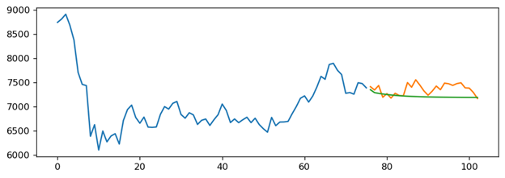
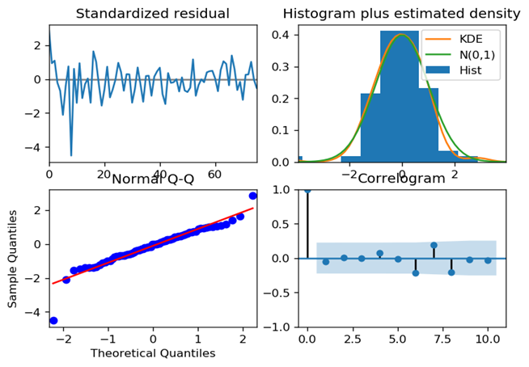
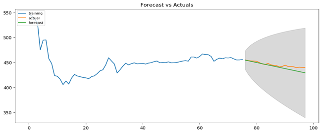
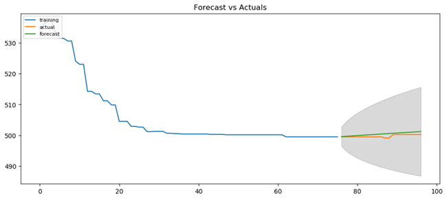
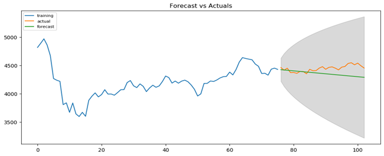
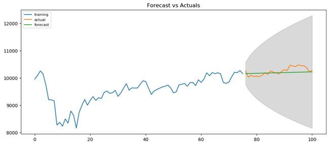
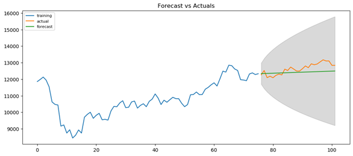

España · Suecia · Bulgaria · Ucrania · Portugal · Alemania
España
Suecia
Bulgaria
Ucrania
Portugal
Alemania
Evolución
España · Suecia · Bulgaria · Ucrania · Portugal · Alemania
2019
Primer caso confirmado
España: 31 Enero
Suecia: 31 Enero
Bulgaria: 8 Marzo
Ucrania: 3 Marzo
Portugal: 2 Marzo
Alemania: 27 Enero
2020
Inicio del confinamiento
España: 14 Marzo
Suecia: -
Bulgaria: 13 Marzo
Ucrania: -
Portugal: -
Alemania: -
2021
Vacunación completa
España: 79,1%
Suecia: 68,9%
Bulgaria: 23,1%
Ucrania: 19,3%
Portugal: 87,3%
Alemania: 66,9%
Actualidad
Modelos predictivos
Impacto del COVID-19 en la Bolsa de Valores de los principales mercados europeos
Modelo Arima
Auto - Arima
Otros Escenarios
Fuentes
Principales fuentes utilizadas para la realización de la página
España
47,35 millones de habitantes
Evolución temporal de cada una de las variables principales: valor de la bolsa, número de fallecidos, casos confirmados, población contagiada y población recuperada por COVID-19.
Casos totales:
5.366.128
Fallecidos totales:
88.673
Casos últimos 28 días:
304.770
Fallecidos últimos 28 días:
797
Suecia
10,35 millones de habitantes
Evolución temporal de cada una de las variables principales: valor de la bolsa, número de fallecidos, casos confirmados, población contagiada y población recuperada por COVID-19.
Casos totales:
1.238.689
Fallecidos totales:
15.204
Casos últimos 28 días:
53,596
Fallecidos últimos 28 días:
110
Bulgaria
6,927 millones de habitantes
Evolución temporal de cada una de las variables principales: valor de la bolsa, número de fallecidos, casos confirmados, población contagiada y población recuperada por COVID-19.
Casos totales:
718.651
Fallecidos totales:
29.764
Casos últimos 28 días:
55.912
Fallecidos últimos 28 días:
3.005
Ucrania
44,13 millones de habitantes
Evolución temporal de cada una de las variables principales: valor de la bolsa, número de fallecidos, casos confirmados, población contagiada y población recuperada por COVID-19.
Casos totales:
3.754.567
Fallecidos totales:
97.714
Casos últimos 28 días:
347.193
Fallecidos últimos 28 días:
14.515
Portugal
10,31 millones de habitantes
Evolución temporal de cada una de las variables principales: valor de la bolsa, número de fallecidos, casos confirmados, población contagiada y población recuperada por COVID-19.
Casos totales:
1.200.193
Fallecidos totales:
18.687
Casos últimos 28 días:
90.038
Fallecidos últimos 28 días:
413
Alemania
83,24 millones de habitantes
Evolución temporal de cada una de las variables principales: valor de la bolsa, número de fallecidos, casos confirmados, población contagiada y población recuperada por COVID-19.
Casos totales:
6.620.222
Fallecidos totales:
106.690
Casos últimos 28 días:
1.488.839
Fallecidos últimos 28 días:
8.407
Modelo Arima
Modelo autorregresivo integrado de promedio móvil
Es una clase de modelo que captura un conjunto de diferentes estructuras temporales estándar en series de datos y que proporciona un método simple pero poderoso para realizar pronósticos de series temporales. Se trata de un modelo que 'explica' una serie de tiempo determinada en función de sus propios valores pasados, es decir, sus propios retrasos y los errores de pronóstico de estos retrasos. Cualquier serie de tiempo "no estacional" que muestre patrones y no sea un ruido blanco aleatorio se puede modelar con modelos ARIMA.
La estacionariedad de los datos se describe mediante los siguientes tres criterios: media constante, varianza constante y la covarianza automática no depende del tiempo.
Aplicación a un escenario: España
Se ha analizado la estacionariedad de la serie temporal que representa los valores de bolsa. A través del test ADF obtenemos que el p-valor es 0.01, por lo que no necesita diferenciación. Sin embargo, con el propósito de hacer un análisis más exhaustivo se analizan los gráficos de auto correlación.
p-valor < 0.05 → Serie estacionaria
Al observar el gráfico para el primer orden de diferenciación se ve que la serie temporal cuenta con un lag prominente mientras que el resto se encuentran dentro de la zona límite. Analizando el gráfico de auto correlación para la segunda diferenciación, el retraso entra en la zona negativa rápidamente, lo que indica que la serie podría haber sido sobre diferenciada si usamos dos diferenciaciones. Por tanto, tras realizar el test ADF, se sugiere el uso de d=0 para la serie temporal, de forma que la serie es estacionaria.
Término AR(p)
Para el término AR se analizan los gráficos de auto correlación parcial. Se observa que el retraso PACF 1 es significativo (por encima de la línea de importancia), el retardo 2 también es significativo, ya que cruza levemente el límite de significancia (región azul). Se fijará p=1 para el modelo.
Término MA(q)
Tras este análisis se va a generar el modelo Arima con los parámetros d=1, p=1 y q=1 ya que para d=0, p=1 y q=1 se obtiene un p-valor no significativo, por lo que continuamos con el modelo AR(1,1,1), donde si son significativos y arroja mejores resultados presentando un mejor valor de la métrica AIC.
Errores residuales
Los errores residuales presentan una media cercana a cero y una varianza uniforme.
Datos reales vs. datos ajustados
Rendimiento
Entre las diferentes combinaciones de los parámetros del modelo, el que aporta una mejor predicción es el modelo ARIMA(1,1,1).
Se calcula la métrica de precisión error de porcentaje absoluto medio (MAPE). Se observa que la serie temporal tiene un valor para la métrica MAPE de 3.2% lo que implica que el modelo es 96.8% preciso en predecir las siguientes 27 observaciones.
Modelo Arima
(1,1,1)
Media
≈ 0
Varianza:
Uniforme
MAPE:
3.2% → 96.8% preciso
Predicción:
27 observaciones
Auto Arima: España
Pronósticos de series temporales
Con el fin de generalizar el proceso se utilizará el modelo Auto-Arima, el cual buscará los mejores parámetros para cada serie temporal. Para conseguir un modelo más completo y eficiente, se usarán diversos híper parámetros que permitirán ajustar el modelo lo mejor posible a los datos de manera automática.
Hiperparámetro ‘seasonal’ → identifica ‘P’ y ‘Q’ más óptimos → Canova-Hansen test Optimización del hiperparámetro ‘information_criterion’ → arima que minimiza el valor Hiperparámetro ‘stepwise’ → busca combinaciones de ‘P’, ‘D’ y ‘Q’ → elige el modelo con menor AIC
Los resultados obtenidos con el modelo Auto-Arima identifican un modelo ARIMA(1,0,2) como el mejor modelo con valor de la métrica AIC de 1047.
A continación, una representación gráfica de la predicción del modelo.

Errores residuales. Densidad, distribución y correlograma
A continación, se muestran los errores residuales y las gráficas de densidad, distribución y correlación y las pertinentes conclusiones.

Los errores residuales deben fluctuar alrededor de una media de cero y tener una varianza uniforme. La gráfica se corresponde con la figura superior de la izquierda.
La gráfica de densidad que se corresponde con la imagen superior de la derecha debe presentar una distribución normal con media cero.
El gráfico Q-Q representa cualquier desviación significativa en el modelo que implicase que la distribución está sesgada. Todos los puntos deben estar perfectamente alineados con la línea roja.
El correlograma, situado en la parte inferior derecha, también conocido como gráfico ACF, muestra que los errores residuales no están auto-correlacionados. Cualquier auto correlación implicaría que existe algún patrón en los errores residuales que no se explican en el modelo. Por lo tanto, se deberá buscar más predictores en el modelo.
Todas las métricas se encuentran dentro de los parámetros adecuados, de forma que el modelo Auto-ARIMA se ajusta correctamente al patrón de los datos haciendo posible su predicción.
Escenarios
Bulgaria · Ucrania · Portugal · Suecia · Alemania
Bulgaria

Los errores fluctúan alrededor de una media de cero y tienen una varianza uniforme. La gráfica de densidad presenta una distribución normal con media cero. El gráfico Q-Q muestra todos los puntos alineados con la línea roja. El correlograma, muestra que los errores residuales no están auto correlacionados. Una vez que todas las métricas se encuentran dentro de los parámetros adecuados, se procede a realizar la predicción de la bolsa de valores para los 22 siguientes días.
Ucrania

Los errores presentan una fluctuación que no se ciñe alrededor de una media de cero y tienen una varianza que no es uniforme. La gráfica de densidad presenta una distribución que no es normal. El gráfico Q-Q muestra una desviación de los puntos con respecto a la línea roja. El correlograma, muestra que algunos errores residuales están auto correlacionados, debido a que sobresalen del límite. Cualquier auto correlación implica que existe algún patrón en los errores residuales que no se explican en el modelo. Por lo tanto, se deberá buscar más predictores en el modelo. Una vez que todas las métricas se encuentran dentro de los parámetros adecuados, se procede a realizar la predicción de la bolsa de valores para los 21 siguientes días.
Portugal

Los errores presentan una fluctuación alrededor de una media de cero pero muestran una varianza que no es uniforme. La gráfica de densidad presenta una distribución que es normal con media 0. El gráfico Q-Q muestra alineación de los puntos con respecto a la línea roja. El correlograma, muestra que los errores residuales no están auto correlacionados. En términos generales, se trata de un modelo buen predictor.
Suecia

Los errores presentan una fluctuación alrededor de una media de cero con una varianza que es uniforme. La gráfica de densidad presenta una distribución que es normal con media 0. El gráfico Q-Q muestra alineación de los puntos con respecto a la línea roja. El correlograma, muestra que los errores residuales no están auto correlacionados. De esta forma, se concluye que se trata de un modelo con una buena capacidad de predicción.
Alemania

Los errores presentan una fluctuación alrededor de una media de cero con una varianza que es uniforme. La gráfica de densidad presenta una distribución que es normal con media 0. El gráfico Q-Q muestra alineación de los puntos con respecto a la línea roja. El correlograma, muestra que los errores residuales no están auto correlacionados. Tras realizar el análisis del modelo se concluye que se trata de un modelo con una buena capacidad de predicción tal y como puede observarse en el gráfico, ajustándose a la tendencia de los datos.


 p-valor < 0.05 → Serie estacionaria
p-valor < 0.05 → Serie estacionaria